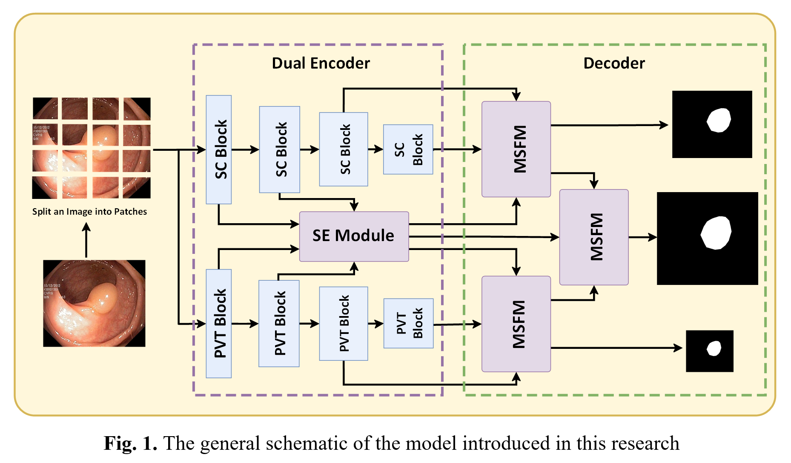

Javad Mozaffari; Abdollah Amirkhani; Shahriar B. Shokouhi. A survey on deep learning models for detection of COVID-19 with CT and X-ray images. Neural Computing and Applications.
Javad Mozaffari; Abdollah Amirkhani; Shahriar B. Shokouhi. ColonGen: An efficient polyp segmentation system for generalization improvement using a new comprehensive dataset. Physical and Engineering Sciences in Medicine.

Javad Mozaffari; Zahra Bazzazi; Abdollah Amirkhani; Shahriar B. Shokouhi, An automated deep learning-based network for breast cancer DCE-MRI classification and segmentation using segment anything model (SAM), (Submitted to Computers in Biology and Medicine).
Mahdieh Alilou; Javad Mozaffari; Abdollah Amirkhani; Shahriar B. Shokouhi, A novel transformer model for benchmarking a new polyp dataset from Asia, (in preparation for IEEE Transactions on Biomedical Engineering).